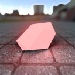

Bien commencer
Crée ton personnage
Ouvre le menu des personnages avec F6 et choisis ta faction : République (Jedi), Neutre (citoyen) ou Empire (Sith). Chaque personnage a son propre niveau, ses points et son inventaire.
Commence apprenti
Un Jedi débute Padawan, un Sith Acolyte. Ton sabre laser t'est donné automatiquement à l'apparition.
Gagne de l'expérience
Combats au sabre et accomplis des quêtes pour monter de niveau. Chaque niveau donne 25 points de compétence.
Monte en grade
Les grades au-dessus de Padawan et d'Acolyte sont attribués par tes supérieurs. Ton grade fixe tes PV et ta réserve de Force de base ; tu changes de métier via F4 parmi ceux de ta faction auxquels tu as accès.
XP et niveaux
Le niveau va de 1 à 50. Pour passer au niveau suivant, il faut 100 XP fois ton niveau actuel : 100 XP pour passer niveau 2, 4 900 XP pour passer niveau 50. Le temps de jeu seul ne rapporte rien.
Combattre au sabre
Vaincre un joueur ou un PNJ avec une arme LSCS rapporte de l'XP selon les PV max de la cible.
| Cible | XP |
|---|---|
| Cible de 100 PV (citoyen, PNJ faible) | 2 XP |
| Cible de 1 000 PV (Gardien, Ravageur…) | 25 XP |
| Cible de 4 000 PV | 116 XP |
| Cible de 20 000 PV | 679 XP |
Accomplir des quêtes
Les quêtes donnent de l'XP à la livraison. Certaines demandent un niveau minimum.
Ton XP s'affiche dans la troisième barre du HUD, ton niveau dans l'emplacement prévu à côté.
Les cinq statistiques
Chaque statistique monte jusqu'à 5. Un point de statistique coûte 25 points de compétence. Les bonus s'appliquent aux PV et à la Force de base de ton grade.
| Statistique | Effet par point (max 5) |
|---|---|
| Vitalité | +10 % de vie max par point. |
| Dextérité | +10 % de vitesse et de chances d'esquive par point. |
| Endurance | −10 % de dégâts reçus et +1 % de vie max régénérée par seconde, par point. |
| Intelligence | +10 % de chances de coup critique et de Force max par point. |
| Force | +10 % de dégâts au sabre par point. |
Le budget de points
Au niveau 50, tu disposes de 1 225 points. Tout apprendre en coûterait bien plus : il faut choisir selon ton rôle.
| Dépense | Coût total |
|---|---|
| Les 5 statistiques au maximum | 625 |
| Toutes les formes de combat | 1 175 |
| Tous les pouvoirs accessibles à un Jedi (holocrons compris) | 3 550 |
| Tous les pouvoirs accessibles à un Sith (holocrons compris) | 3 225 |
Construire ton sabre
Un sabre se compose d'une poignée et d'un cristal. Rassemble-les, puis assemble-les à la forge de ton Ordre.
La poignée
Achète-la au marchand de poignées : plus de 350 modèles en quatre catégories. Une poignée déjà possédée ne peut pas être rachetée.
| Catégorie | Modèles | Prix |
|---|---|---|
| Communes | 38 |  1 500 1 500 |
| Ouvragées | 156 | 4 000 |
| Sabres doubles | 89 | 8 000 |
| Légendaires | 77 | 15 000 |
Le cristal

Douze cristaux apparaissent au sol à des endroits aléatoires d'une zone de la map. Un cristal ramassé réapparaît ailleurs cinq minutes plus tard ; les autres changent de place toutes les 30 minutes. Les couleurs classiques sont fréquentes, les cristaux mythiques très rares.
La forge
Monte poignée et cristal à la forge Jedi ou Sith. Ton sabre est lié à ton métier : seuls les Jedi et les Sith en portent un, et il ne peut pas être lâché.
Les PNJ utiles
Approche-toi et appuie sur E.
| PNJ | Rôle |
|---|---|
| Maître d'armes | Enseigne les formes de combat contre des points de compétence. |
| Maître de la Force | Enseigne les pouvoirs. Il existe une version Jedi et une version Sith, qui n'enseignent qu'à leur Ordre. |
| Holocron Jedi / Sith | Relique rare qui enseigne les techniques interdites ou perdues. Ne s'ouvre qu'à son Ordre. |
| Marchand de poignées | Vend les poignées de sabre contre des crédits. Réservé aux Jedi et aux Sith. |
| Forge Jedi / Forge Sith | Assemble ton sabre : poignée et cristal. Chaque forge ne sert que son Ordre. |
| Coffre | Ton inventaire : poignées, cristaux, formes et pouvoirs. |
| Terminal d'entraînement | Équipe tes formes et tes pouvoirs de Force. |
Touches utiles
Attention aux chutes : la Force amortit les petites chutes, mais au-delà d'environ 7,5 mètres les dégâts s'appliquent, même après un saut de Force.